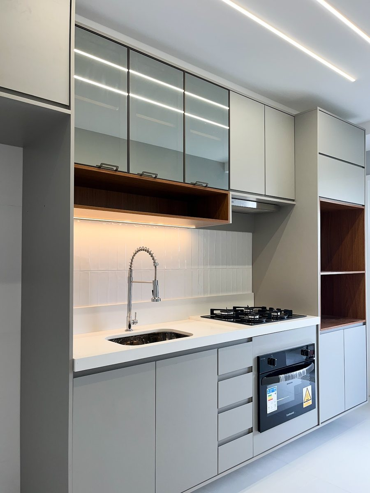
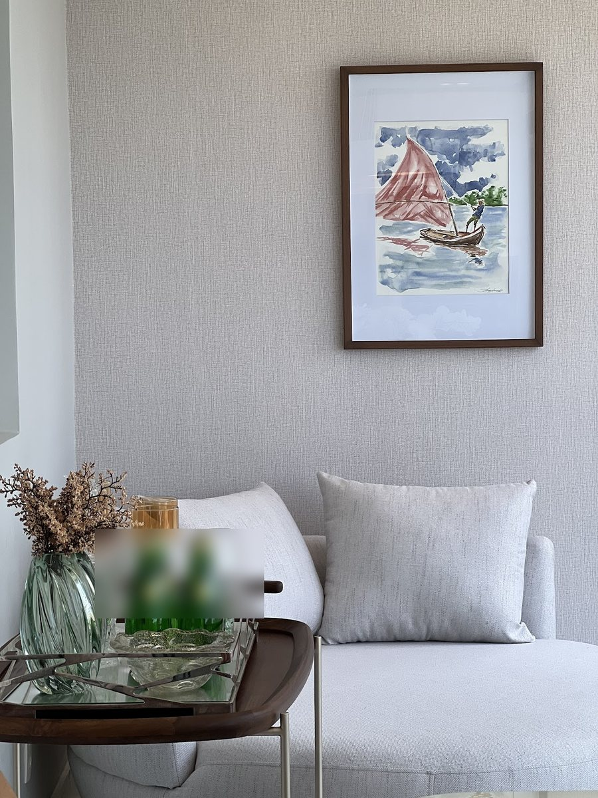
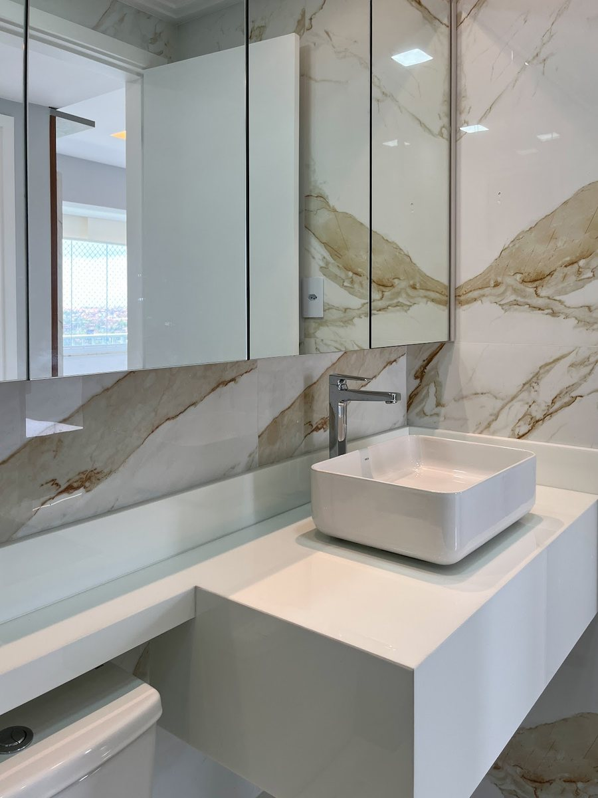
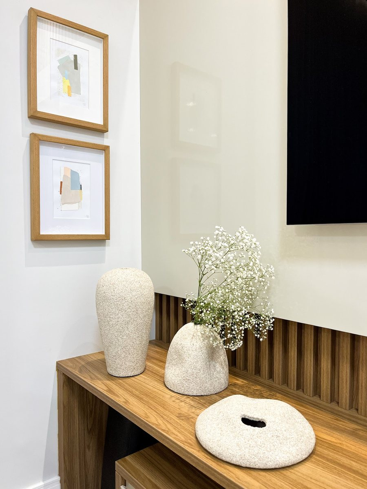
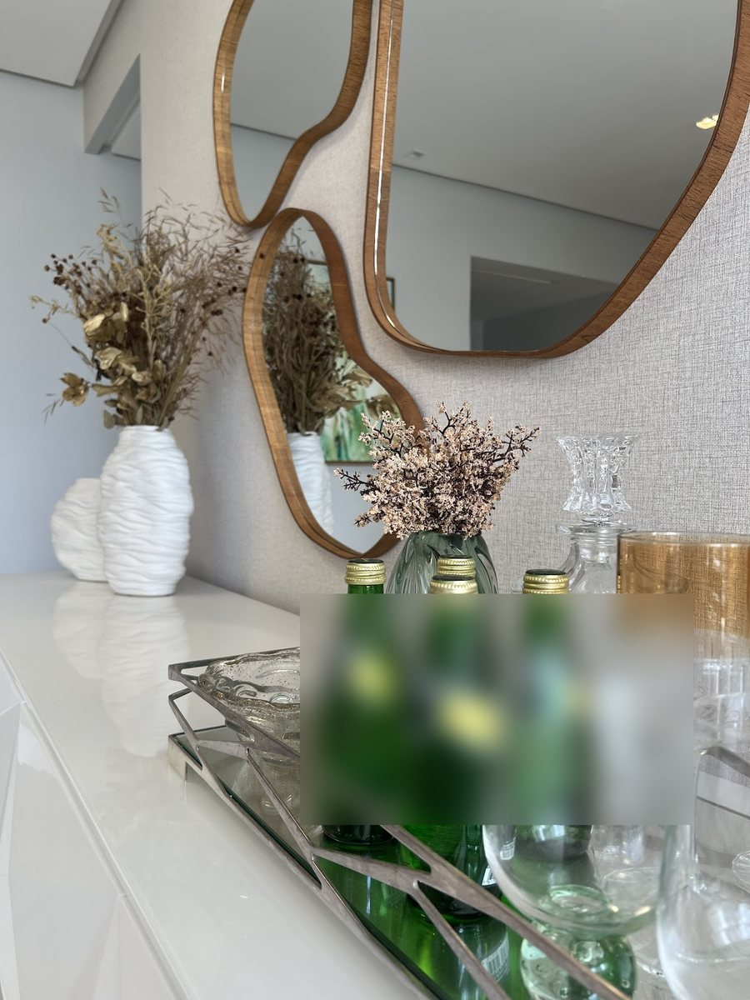

“Gosto de nomear todos meus projetos de forma carinhosa e com significado”, escreveu a Marcela. Aqui estão os projetos que ela publicou, com o que cada legenda conta. Renders e estudos em 3D estão identificados como tal.
Marcela NeriDesigner de interiores · Neri Interiores · Salvador e região
Cada projeto tem um nome
Os projetos nomeados
roxo · madeira · cimento queimado
Apê Afeto
Apartamento · AlphaVille Salvador
Por que esse nome: Os clientes têm uvas na fazenda: daí o roxo do projeto, o elemento “quadro” para remeter à natureza e o pendente que lembra as formas naturais de uma aranha. Madeira para o aconchego e cimento queimado “pra lembrar que aquela é o apê da cidade”.
Por que esse nome: Um espaço compacto que precisava virar uma experiência de compra — o design afetivo levado para o varejo.
“o desafio foi transformar um espaço compacto em uma experiência de compra prática, acolhedora e visualmente marcante. Design afetivo aplicado ao varejo”
Fotos publicadas no perfil da Neri Interiores no Google: cozinha, sala, banheiro e detalhes. Os nomes desses projetos não aparecem nas legendas — por isso eles entram aqui pelo tipo de ambiente.

Cozinha · ambiente

Sala de estar · ambiente

Banheiro · ambiente

Aparador ripado · ambiente

Bancada e espelho orgânico · ambienteSuíte · estudo em 3D
Transparência
Render, estudo e foto
Render
Imagem gerada no computador a partir do projeto. Mostra como o espaço deve ficar, antes ou durante a obra.
Estudo em 3D
Uma etapa do projeto em que a proposta é vista em volume — útil para decidir antes de comprar e construir.
Ambiente
Foto de um espaço. Neste site, as fotos de ambiente vêm do perfil da Neri Interiores no Google.
Boa parte dos projetos nomeados está publicada em render — inclusive o Refúgio por Roca, que concorreu numa categoria dedicada a projetos renderizados.
Para quem vai contratar
Como ler o portfólio
Repare no nome: ele conta a ideia do projeto — as uvas da fazenda no Apê Afeto, as cores e formas no Lavabo 602.
Repare nos materiais: madeira, curvas, cor e plantas aparecem em vários projetos.
Repare no uso: um mercado compacto, um salão de beleza, um lavabo — cada um resolve um problema diferente.
Leve imagens: na primeira conversa, imagens que você guardou ajudam a mostrar o que é a sua cara.
Instagram
Mais no Instagram
O perfil @neriinteriores tem mais de 500 publicações, com outros projetos, bastidores e vídeos. Abrir o Instagram.